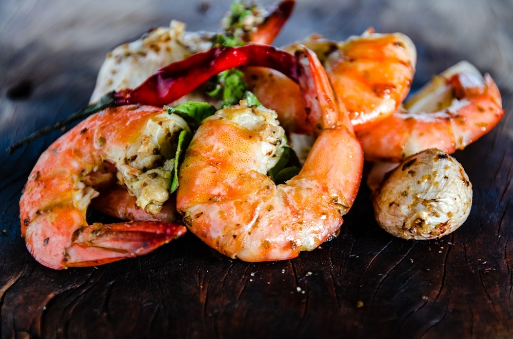

Camarones al Ajillo

Camarones Es una receta bastante sencilla, por lo que no requiere mucha complicación y te permitirá poder servir en la mesa un exquisito plato, además de nutritivo y aconsejable para mantener una dieta sana y equilibrada. Además de para picar o como una tapa, también te puede servir para acompañar platos calientes, así como comidas frías o tomar un nutritivo tentempié..
Preparación
En primer lugar, freír el ajo con los camarones a fuego medio en una sartén previamente lubricada con el aceite o la mantequilla derretida (así nos lo recomiendan en la receta).
Añadir el zumo de limón y el vino blanco, deja que el líquido se absorba un poco para que los camarones se marinen y queden tiernos y gustosos.
A continuación, agregar el perejil o cilantro picado.
Dejar cocinar los camarones en fuego medio durante 10 minutos como máximo (hasta que los camarones tomen un color rosado), revisándolos y moviéndolos un poco de vez en cuando.
Pueden servirse con pan tostado, arroz blanco o como gustes. Incluso sin más un buen plato de camarones al ajillo es irresistible.